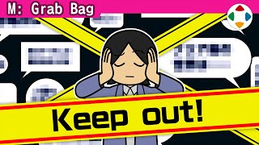
速览
樱井喜欢像独自走在无人踏过的雪地上那样享受作品：什么都不知道，也没有任何人走过的足迹——这个意义上，比起多人玩在线游戏，他更喜欢离线单人。决定要享受的作品，他会彻底防剧透：不论游戏还是电影，一出现话题就屏蔽一切信息，电影院放预告片时就闭上眼睛不看。他想从一无所知、毫无偏见的地方开始享受，只把自己的感受当作全部前进。攻略网站也不看，真的卡住又想往前时才确认，几乎是最后手段；也不看游戏实况——要看还不如自己玩、自己试。好坏两面，偏见几乎不会产生，感动能 100% 享受。如今马上就会碰到剧透，视频也大量流出，特别是剧情向作品很难防。但正因为这样的环境已成为常态，他特意推荐：偶尔只凭自己的感觉去玩也很有趣——虽然个人差异大，但至少能感受到的东西会大增；如果是为了研究作品，这样做再好不过；想知道别人的感想，玩完再去找就好。他自觉这完全是个人偏好、这种态度可能也过时了，但至少他能保持新鲜感享受作品，带着各种惊喜面对作品——也只能感叹，做出这些乐趣的人真了不起。
1. 无人踏过的雪地 0:07
樱井喜欢像独自走在无人踏过的雪地上那样享受作品：什么都不知道，也没有任何人走过的足迹。
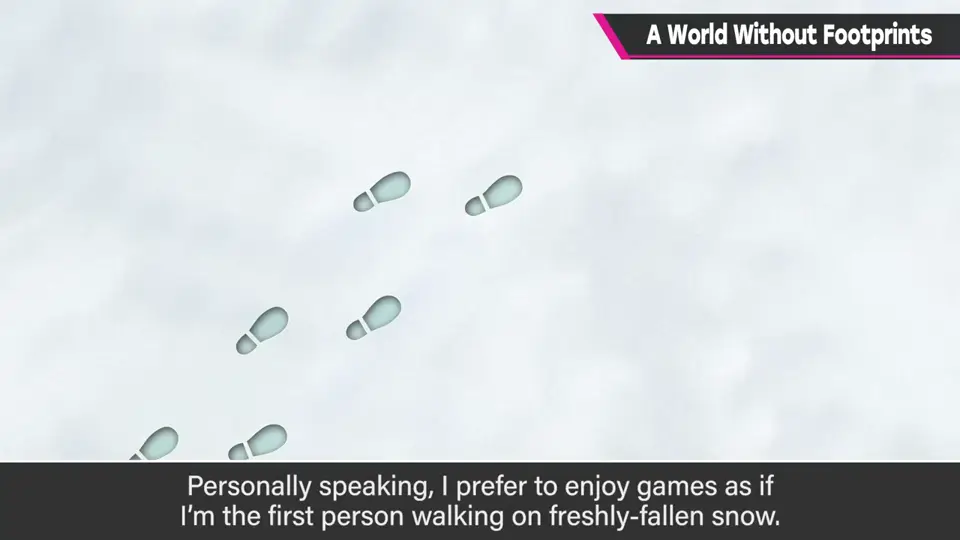
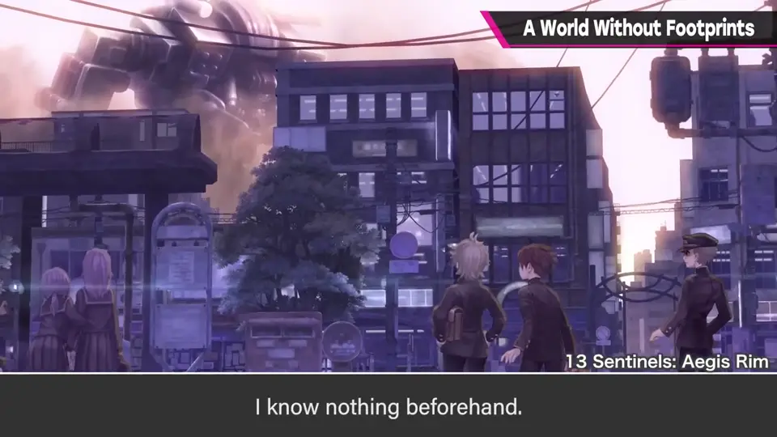
这个意义上，比起多人玩在线游戏，他更喜欢离线单人玩。
2. 彻底防剧透 0:31
决定要享受的作品，他会彻底防剧透：一出现话题就屏蔽一切信息。
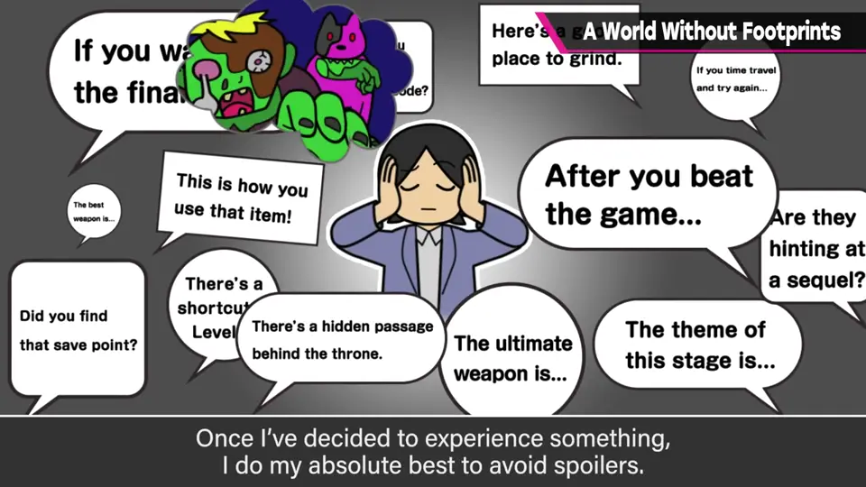
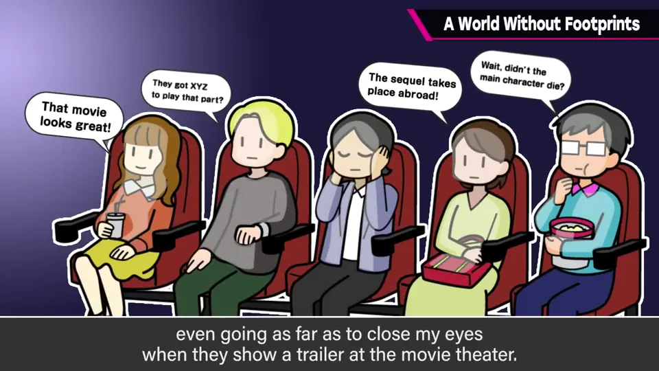
3. 不看攻略与实况 1:03
- 攻略网站不看；真的卡住又想往前时才确认，几乎是最后手段。
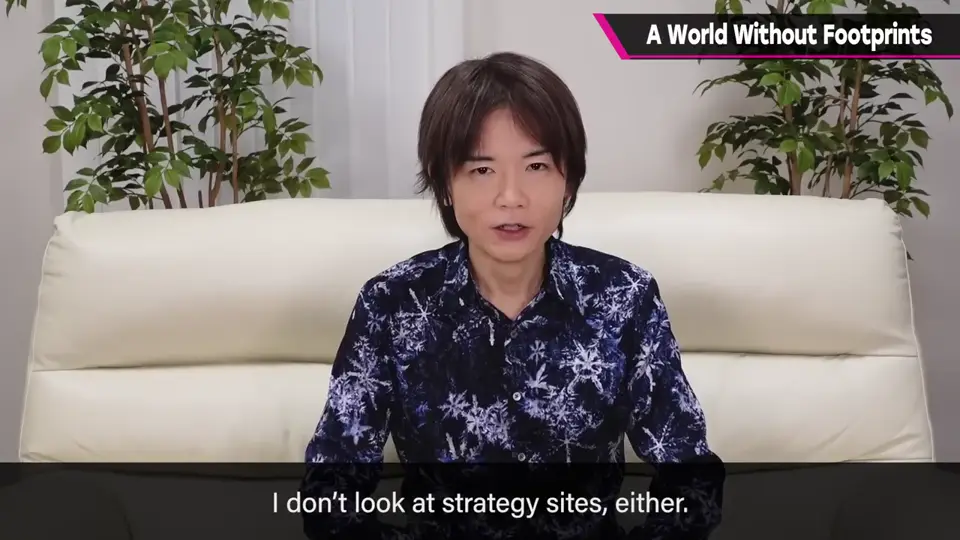
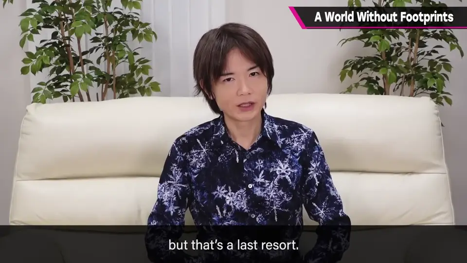
- 游戏实况也不看——要看还不如自己玩、自己试。
好坏两面，偏见几乎不会产生，感动能 100% 享受。
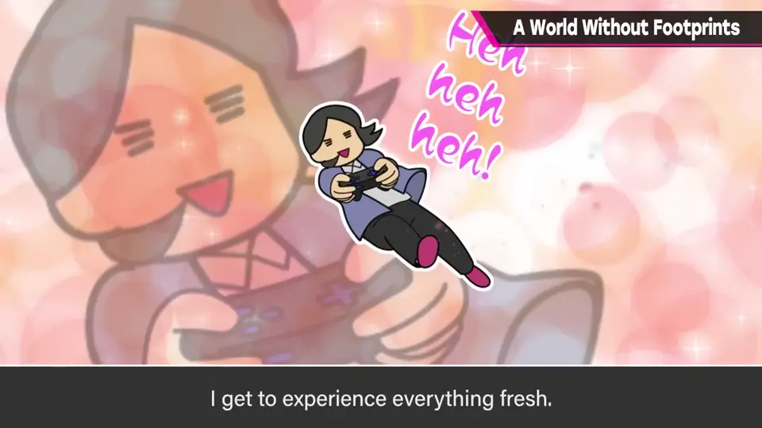
4. 推荐偶尔这样玩 1:27
如今马上就会碰到剧透，视频也大量流出，特别是剧情向作品很难防。
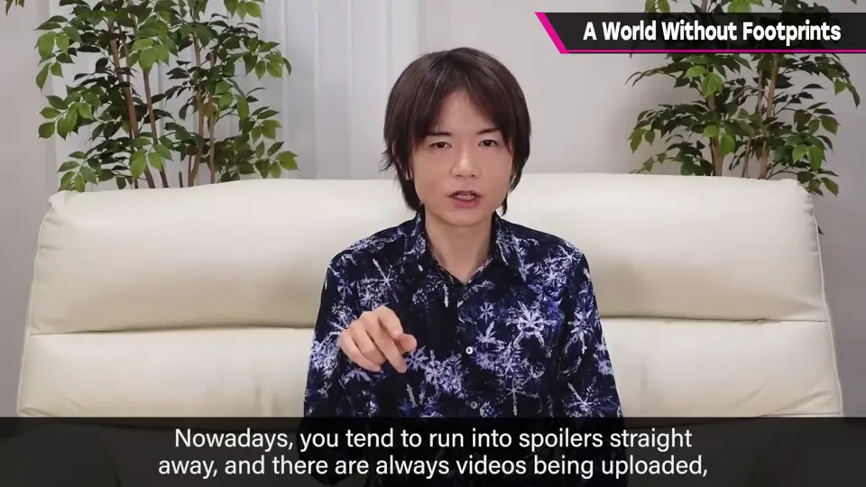
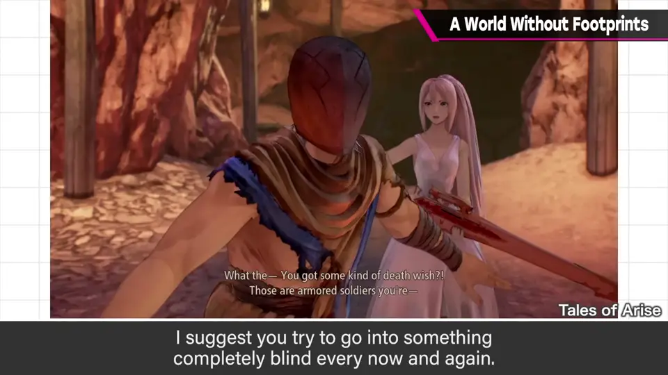
- 若是为了研究作品，这样做再好不过。
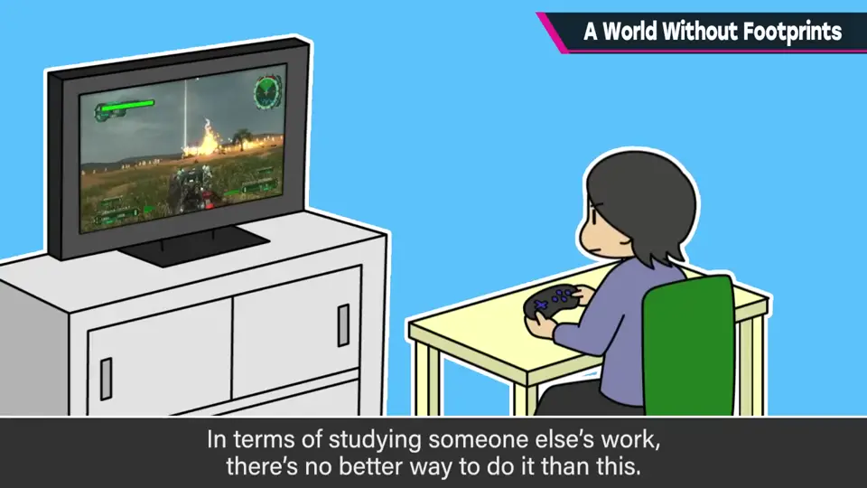
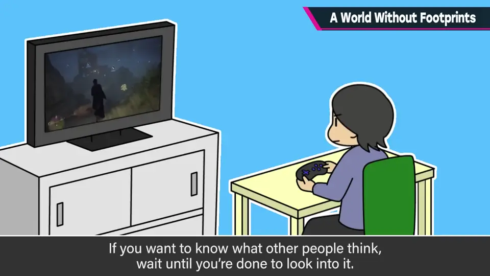
- 想知道别人的感想，玩完再去找就好。
5. 个人偏好 2:05
他自觉这完全是个人偏好，这种态度可能也过时了；但至少他能保持新鲜感享受作品，带着各种惊喜面对作品——也只能感叹，做出这些乐趣的人真了不起。
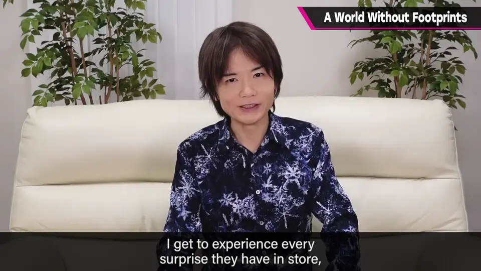
自测题
1. 「没有脚印的世界」指怎样的游玩方式？
一无所知、无剧透、无他人痕迹地独自体验作品（偏好离线单人）。 0:14
2. 樱井什么时候才看攻略？
真的卡住又想继续时，几乎作为最后手段。 1:03
3. 他为什么推荐偶尔只凭自己感觉玩？
偏见少、感动能 100% 享受，感受更多，也最适合研究作品；感想可玩完后再看。 1:45